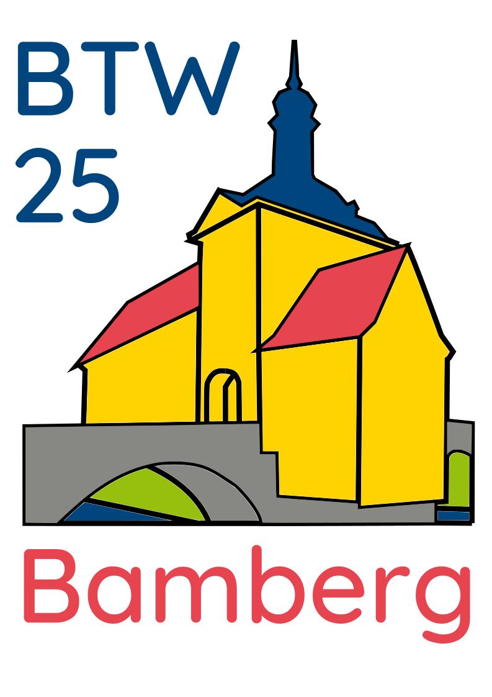
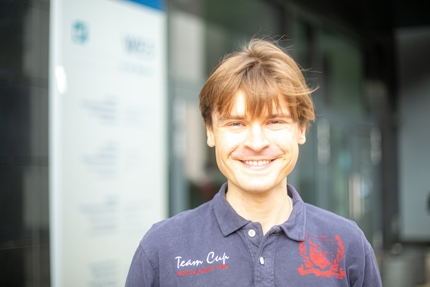
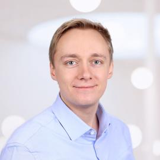
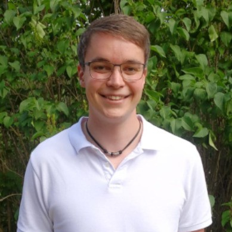

| Time | Speaker | Title | |
|---|---|---|---|
| 09:00 - 09:20 | Matthias and Andreas | Opening Remarks |
| Time | Speaker | Title | |
|---|---|---|---|
| 09:20 - 09:40 |  |
Maximilian Schüle (Uni Bamberg) | Blue Elephants Inspecting Pandas: Inspection and Execution of Machine Learning Pipelines in SQL |
| 09:40 - 10:00 | Maximilian Böther (ETH Zurich) | Modyn: Data-Centric Machine Learning Pipeline Orchestration | |
| 10:00 - 10:30 |  |
Stefan Grafberger (TU Berlin) | mlwhatif: Data-Centric What-If Analysis for Native Machine Learning Pipelines |
| Time | Speaker | Title | |
|---|---|---|---|
| 11:00 - 11:20 |  |
Stefan Hagedorn, Steffen Kläbe (Actian) | Experiences of Implementing In-Database TPCx-AI |
| 11:20 - 11:50 | Thaleia-Dimitra Doudali (IMDEA) | Keep it Simple, Sustainable! When Is ML Necessary in Cloud Resource Management? | |
| 11:50 - 12:10 | Jan-Micha Bodensohn, Liane Vogel (TU Darmstadt & DFKI) | Large Language Models for Enterprise Data Engineering | |
| 12:10 - 12:30 | Akanksha Vijayvergiya (Uni Passau) | Time-Series Analysis for Life-Science Data |
| Time | Speaker | Title | |
|---|---|---|---|
| 13:15 - 13:45 | Silvan Reiner (Uni Konstanz) | ML4DB: Don’t Learn What You Already Know | |
| 13:45 - 14:05 | Johannes Wehrstein (TU Darmstadt) | GRACEFUL: A Learned Cost Estimator For UDFs | |
| 14:05 - 14:35 | Giorgio Vinciguerra (Uni Pisa) | Learned Compression of Nonlinear Time Series With Random Access | |
| 14:35 - 15:05 | Immanuel Trummer (Cornell) | CheaPT: Using Language Models Without Breaking the Bank |
The rapid advances in machine learning (ML) have significantly increased its adoption across various fields including data systems, both in academia and industry. These advancements have not only enhanced existing data systems but, in some cases, have completely transformed their internal components, leading to the development of an important field of “learned data system components” in the ML for Systems area. Similarly, a well-structured systems approach has also played a crucial role in advancing current ML techniques and systems, forming the basis for the Systems for the ML area.
The workshop aims to bring together renowned researchers both by means of keynotes and invited talks to discuss and debate intriguing topics at the core of the two focus areas. The open format for submitting abstracts from anything like a position paper to technical experiences allows for lively debates and discussions as well as fosters collaborations among participants to work on common topics. The speakers are expected to also share insights into their ongoing projects and the open research challenges they are currently addressing.
A key objective of this workshop is to promote interaction between all attendees—whether they are presenting authors, keynote or invited speakers, or other participants—to foster new collaborations.
This year in the ML4Sys and Sys4ML workshop we are calling for one-page abstract submissions that can be anything from a position paper representing a novel vision about a viewpoint or a controversial topic, a summary of lessons learned by working on a research area, an open research problem, or technical experience working on a large system (academic or industry). The requirements for the abstracts is as follows
Please use the submission instructions of the main conference, LNI style (see https://gi.de/service/publikationen/lni) for the abstract. Additionally, you can submit a 2-minute video about the position paper, e.g., by demonstration or including a presentation about their work. Instead of a video, a maximum of 3 slides explaining the idea can also be submitted.
Where to submit: Submission Form
In case of questions, contact us at mlsystemsworkshop.btw@gmail.com